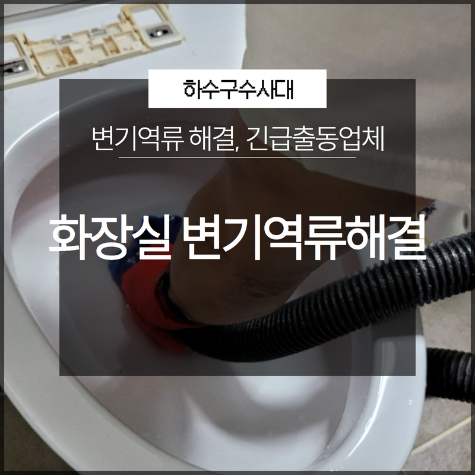
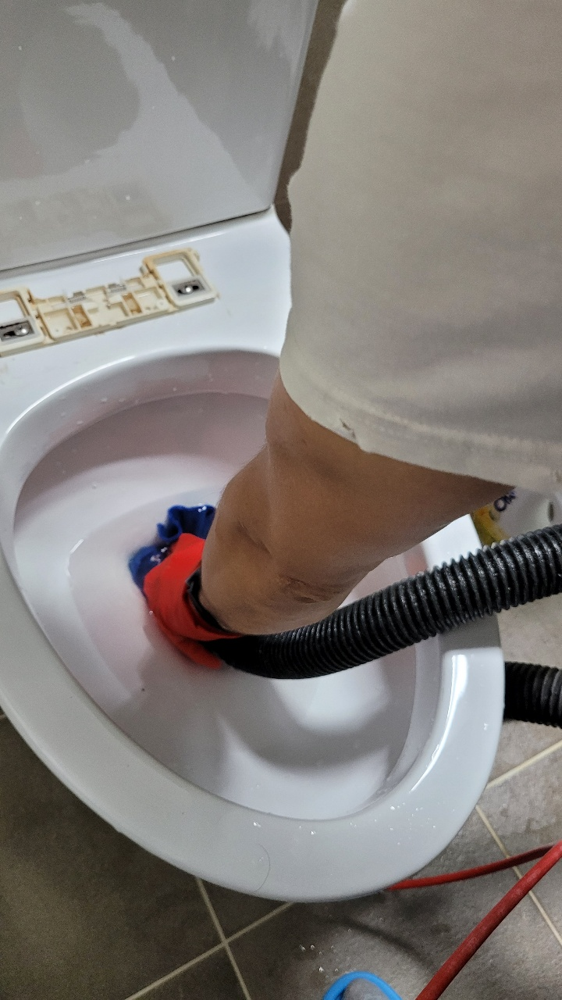
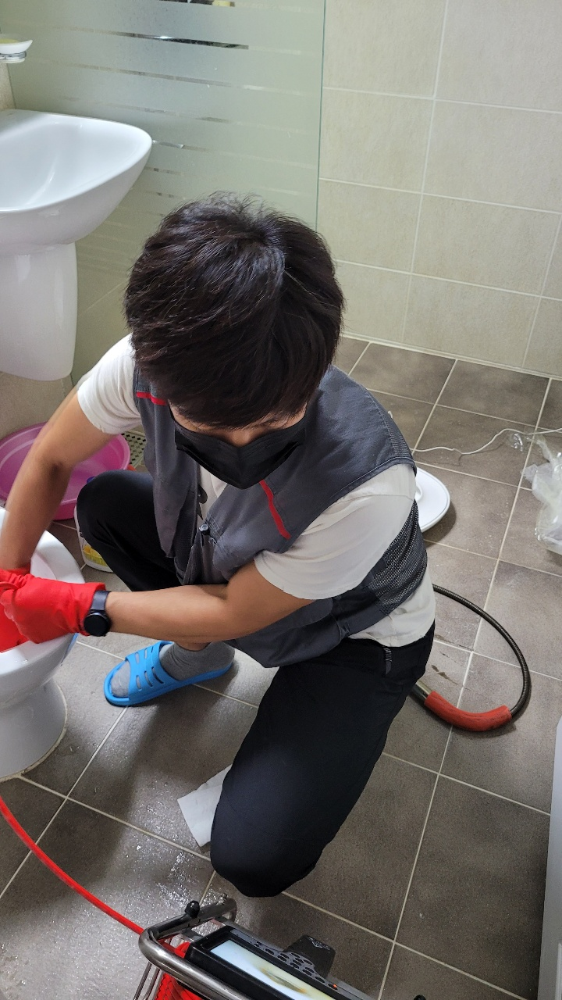
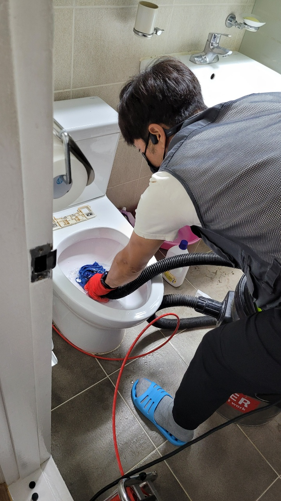
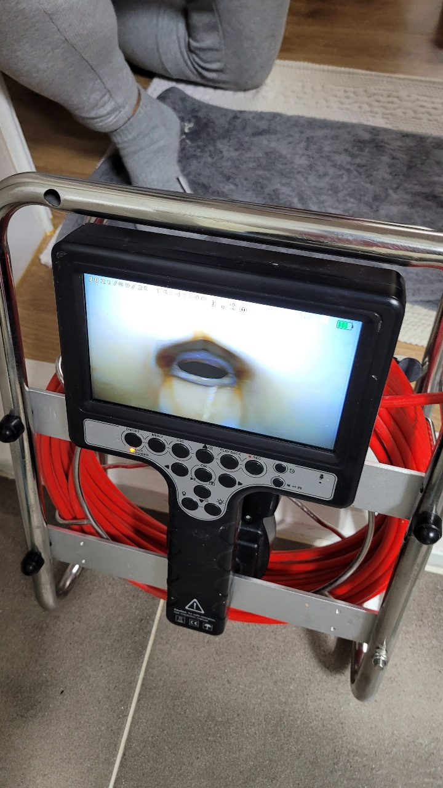

🏠 화장실 변기역류 해결전문 긴급출동업체 정확한 문제 해결!
용인 싱크대막힘 전문 시공 후기

📋 작업 개요
- 위치: 용인
- 서비스 유형: 싱크대막힘, 변기막힘, 하수구막힘, 배관막힘, 역류해결, 뚫는업체
- 작업 일시: 2023. 3. 31. 10:31
- 업체명: 하수구수사대 (010-5615-2118)
🔍 문제 상황
안녕하세요 하수구수사대입니다.
우리는 일상에서 많은 물을 사용을 하고 흘려보내고 있습니다. 특히 싱크대나 화장실 같은 경우에는 하수구가 막힌 상황에서 오래 방치를 하게 되다 보면 역류까지 발생을 하게 될 수 있기 때문에 우리가 생활을 하는 공간이 불편해지고 엉망이 되는 경험을 하게 될 수 있습니다.
그러므로 이렇게 배관이 막히게 되는 경우에는 무엇보다 중요한 것이 바로 제때에 원인을 찾아서 문제를 해결해야 한다는 것입니다. 오늘 소개해 드릴 화장실 변기역류 해결전문 긴급출동업체를 통해서 하수구막힘이 발생을 하게 되면 어떻게 해결을 해야 하는지를 알려드리도록 하겠습니다.

🔎 원인 분석
💡 전문가 진단: 오늘 소개해 드릴 화장실 변기역류 해결전문 긴급출동업체 현장의 경우는
오늘 소개해 드릴 화장실 변기역류 해결전문 긴급출동업체 현장의 경우는
변기가 자주 막혀서 불편함이 많으셨다고 합니다. 그래서 막혔을 때마다 직접 임시로 뚫어뻥을 이용해서 조금씩 해결을 하면서 생활을 하고 계셨다고 합니다. 그러던 중에 어느 날부터인가 물이 내려가는 속도가 너무 느려지게 되면서 바닥과 변기를 이어주는 백시멘트 부근에서도 물이 조금씩 새는 것을 보았다고 합니다.
그래서 다급하게 저희 전문 업체로 문의를 해주신 것이었습니다. 생각보다 심각한 상황에 빠른 해결을 하기 위해서 신속하게 현장으로 달려가 보았습니다. 현장에 나가기 전에 고객분들과의 상담을 통해서 상황에 대해서 자세하게 설명을 해주시긴 하지만 저희는 현장에 도착을 하게 되면 내시경을 이용해서 내부를 확인해 보기 전에는 정확한 하수구막힘의 원인을 알 수는 없는 것입니다.
그래서 저희는 항상 현장을 방문을할때 다양한 최신 장비를 챙겨서 달려가고 있습니다. 하수구배관 같은 경우에는 우리 눈에 보이지 않는 부분들이 많기 때문에 평소에 이렇게 갑작스럽게 막힘이 발생하는 것을 예방하기 위해서는 전문 업체를 통해서 정기적으로 점검을 하고 관리를 받는 것이 좋습니다.

🔧 작업 과정
저희는 또한 전문 장비와 오랜 노하우를 가진 전문가들이 있기 때문에
믿고 맡겨 주시게 된다면 빠른 해결을 도와드릴 수 있습니다. 화장실 변기역류 해결전문 긴급출동업체 준비한 하수구 내시경을 이용해서 먼저 현장의 막힘의 원인부터 확인을 해보기로 하였습니다. 고객님께서는 화장실로 안내를 해주셨는데요 화장실의 경우에는 하루에도 여러 차례 이용을 하는 공간인 만큼 하수구 막힘이 더욱 빈번하게 일어날 수 있는 곳이라고 할 수 있습니다.
그래서 평소에 관심을 가지고 관리를 해주시게 되면 많은 도움이 되실 수 있습니다. 배관의 경우에는 막히고 나서 해결을 하는 것보다는 막히기 전에 주기적으로 관리를 해주는 것이 훨씬 비용이나 시간을 절약하고 피해를 줄일 수 있는 것입니다. 현장의 변기에서는 주변으로 물이 새고 있는 상황이었는데요 아무래도 변기의 오수관에서 역류가 발생을 한 상황인 것 같았습니다.
먼저 역류를 한 입구에 있는 이물질들을 일부 석션기를 통해서
걷어내고 내시경으로 배관 내부의 상황을 살펴보니 물티슈와 이물질 찌꺼기들로 인해서 배관이 막혀있는 것을 볼 수 있었습니다. 석션기로는 입구에 고인 물과 이물질을 제거하는데 아주 유용한 장비로 고여있던 물을 제거하는데 쓰이는 것입니다. 이렇게 이물질들이 많이 들어있는 경우에는 막힘의 원인 되는 이물질들을 모두 제거하는 것이 필요한데요 저희가 가지고 있는 전문 장비를 이용해서 내부에 있는 이물질들을 모두 제거하기로 하였습니다.


✅ 작업 완료
배관의 내부 이물질들을 말끔하게 제거한 후 내시경 장비로 다시 확인을 하고 물의 흐름을 파악한 뒤에
모든 작업과정을 마무리하였는데요 고객님께서도 아주 만족해하셨습니다.




⚠️ 주방 싱크대 배관 막힘 예방 수칙
- ✅ 기름기가 묻은 식기나 프라이팬은 설거지 전 키친타올로 반드시 기름때를 닦아내세요.
- ✅ 주기적으로 싱크대 개수대에 뜨거운 물을 가득 받아 한 번에 내려 배관 내부 기름을 씻어내세요.
- ✅ 배수구 거름망을 미세한 필터로 사용하시고 음식물 찌꺼기가 틈으로 새어 들지 않게 관리하세요.
- ✅ 베이킹소다와 식초를 뜨거운 물과 함께 일주일에 한 번씩 부어주면 배관 살균과 막힘 예방에 좋습니다.
💡 핵심 정리
- 확실한 장비 작업(내시경 점검 및 샤프트 스케일링)으로 원인을 뿌리 뽑습니다.
- 작업 후 1년 이내에 동일한 부위 재발 시 100% 무상 A/S 서비스를 보장합니다.
- 서울 · 경기 · 인천 전 지역에 24시간 언제든 긴급 출동할 수 있도록 항시 대기 중입니다.
❓ 자주 묻는 질문 (FAQ)
🚨 용인 싱크대막힘 문제로 고민이신가요?
정확한 원인 진단과 확실한 시공으로 재발 없는 해결을 약속드립니다.
24시간 긴급 출동 | 서울 · 경기 · 인천 전지역 | 1년 내 재발 시 무상 A/S